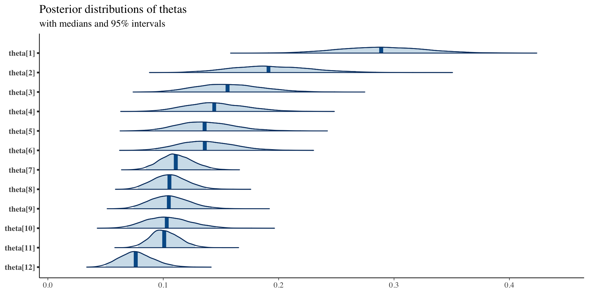

14 Class 14: Hierarchical Models
14.1 Example 1: Bristol babies
Example 14.1 (Bristol babies) The [Bristol heart scandal](https://en.wikipedia.org/wiki/Bristol_heart_scandal came about after it was discovered that babies were dying at high rates after cardiac surgery when treated at the Bristol Royal Infirmary. The comprehensive report5 subsequently led to substantial changes in health service monitoring in the UK. Data from this incident was statistically analyzed in6 and,7 and includes the table below. The following models are fit:
- constant-risk model \[ \begin{split} X_i&\sim\text{Binomial}(n_i,\theta)\\ \theta&\sim\text{Uniform}(0,1) \end{split} \]
- independent parameters model \[ \begin{split} X_i&\sim\text{Binomial}(n_i,\theta_i)\\ \theta_i&\sim\text{Uniform}(0,1) \end{split} \]
- hierarchical model \[ \begin{split} X_i&\sim\text{Binomial}(n_i,\theta_i)\\ \text{logit_i}(\theta)&\sim \mathcal{N}(\mu,\sigma^2)\\ \mu&\sim\text{Uniform}(-100,100)\\ 1/\sigma^2&\sim\text{Uniform}(0,100) \end{split} \] Residual analysis of the constant-risk model shows a poor model selection. Shrinkage is observed for the parameters in the hierarchical model.
library(tidyverse)
library(kableExtra)
bristol = data.frame(hospital = c("Bristol", "Leicester", "Leeds",
"Oxford", "Guys", "Liverpool", "Southampton", "Great Ormond St",
"Newcastle", "Harefield", "Birmingham", "Brompton"), operations = c(143,
187, 323, 122, 164, 405, 239, 482, 195, 177, 581, 301), deaths = c(41,
25, 24, 23, 25, 42, 24, 53, 26, 25, 58, 31)) %>%
mutate(mortality = deaths/operations) %>%
arrange(desc(mortality))
# xtable(bristol,digits=c(0,0,0,0,2))
kbl(bristol) %>%
kable_classic_2(full_width = F)| hospital | operations | deaths | mortality |
|---|---|---|---|
| Bristol | 143 | 41 | 0.2867133 |
| Oxford | 122 | 23 | 0.1885246 |
| Guys | 164 | 25 | 0.1524390 |
| Harefield | 177 | 25 | 0.1412429 |
| Leicester | 187 | 25 | 0.1336898 |
| Newcastle | 195 | 26 | 0.1333333 |
| Great Ormond St | 482 | 53 | 0.1099585 |
| Liverpool | 405 | 42 | 0.1037037 |
| Brompton | 301 | 31 | 0.1029900 |
| Southampton | 239 | 24 | 0.1004184 |
| Birmingham | 581 | 58 | 0.0998279 |
| Leeds | 323 | 24 | 0.0743034 |
14.1.1 Constant-risk model
<<<<<<< Updated upstreammodel = function() {
## Likelihood
for (i in 1:12) {
y[i] ~ dbin(theta, n[i])
res[i] <- (y[i] - n[i] * theta)/sqrt(n[i] * theta * (1 -
theta))
res2[i] <- res[i] * res[i]
}
## prior
theta ~ dunif(0, 1)
X2.obs <- sum(res2[])
}
data = list(n = bristol$operations, y = bristol$deaths)
library(R2jags)
fit <- jags(data = data, model = model, parameters.to.save = c("theta",
"res", "X2.obs"), n.chain = 2, n.iter = 5000, n.thin = 1,
n.burn = 100, DIC = FALSE)
module glm loaded
module dic loaded
Compiling model graph
Resolving undeclared variables
Allocating nodes
Graph information:
Observed stochastic nodes: 12
Unobserved stochastic nodes: 1
Total graph size: 102
Initializing model
fit.mcmc <- as.mcmc(fit)
summary(fit.mcmc)
Iterations = 101:5000
Thinning interval = 1
Number of chains = 2
Sample size per chain = 4900
1. Empirical mean and standard deviation for each variable,
plus standard error of the mean:
Mean SD Naive SE Time-series SE
res[1] 6.1499 0.329142 0.0033248 4.275e-03
res[10] -0.9222 0.246955 0.0024946 3.209e-03
res[11] -1.4817 0.384158 0.0038806 4.992e-03
res[12] -2.5181 0.257998 0.0026062 3.353e-03
res[2] 2.3392 0.236772 0.0023918 3.076e-03
res[3] 1.2884 0.245869 0.0024836 3.194e-03
res[4] 0.8796 0.246193 0.0024869 3.199e-03
res[5] 0.5859 0.246649 0.0024915 3.205e-03
res[6] 0.5830 0.251561 0.0025411 3.268e-03
res[7] -0.6644 0.363689 0.0036738 4.726e-03
res[8] -0.9968 0.325572 0.0032888 4.230e-03
res[9] -0.8975 0.279907 0.0028275 3.637e-03
theta 0.1199 0.005574 0.0000563 7.253e-05
X2.obs 59.0388 2.764042 0.0279210 3.679e-02
2. Quantiles for each variable:
2.5% 25% 50% 75% 97.5%
res[1] 5.5309 5.9250 6.1440 6.3703 6.80791
res[10] -1.3919 -1.0900 -0.9248 -0.7557 -0.43395
res[11] -2.2125 -1.7428 -1.4857 -1.2227 -0.72224
res[12] -3.0102 -2.6931 -2.5202 -2.3438 -2.00949
res[2] 1.8919 2.1778 2.3357 2.4982 2.81052
res[3] 0.8229 1.1210 1.2852 1.4537 1.77674
res[4] 0.4131 0.7120 0.8765 1.0452 1.36818
res[5] 0.1182 0.4181 0.5829 0.7519 1.07509
res[6] 0.1060 0.4118 0.5799 0.7523 1.08189
res[7] -1.3555 -0.9116 -0.6684 -0.4194 0.05536
res[8] -1.6159 -1.2181 -1.0002 -0.7774 -0.35289
res[9] -1.4298 -1.0877 -0.9004 -0.7088 -0.34393
theta 0.1092 0.1161 0.1198 0.1236 0.13077
X2.obs 56.7590 57.0736 58.0523 60.0141 66.59561=======model= function(){ ## Likelihood for (i in 1:12) { y[i] ~ dbin(theta, n[i]) res[i] <- (y[i] - n[i]*theta)/sqrt(n[i]*theta*(1-theta)) res2[i] <- res[i]*res[i] } ## prior theta ~ dunif(0, 1) X2.obs <- sum(res2[]) } data=list(n = bristol$operations, y=bristol$deaths) library(R2jags) fit <- jags(data=data, model=model,parameters.to.save=c("theta","res","X2.obs"), n.chain=2, n.iter=5000, n.thin=1, n.burn=100, DIC=FALSE) module glm loaded module dic loaded Compiling model graph Resolving undeclared variables Allocating nodes Graph information: Observed stochastic nodes: 12 Unobserved stochastic nodes: 1 Total graph size: 102 Initializing model fit.mcmc <- as.mcmc(fit) summary(fit.mcmc) Iterations = 101:5000 Thinning interval = 1 Number of chains = 2 Sample size per chain = 4900 1. Empirical mean and standard deviation for each variable, plus standard error of the mean: Mean SD Naive SE Time-series SE res[1] 6.1547 0.323333 3.266e-03 4.077e-03 res[10] -0.9186 0.242563 2.450e-03 3.058e-03 res[11] -1.4760 0.377327 3.812e-03 4.757e-03 res[12] -2.5142 0.253401 2.560e-03 3.194e-03 res[2] 2.3427 0.232581 2.349e-03 2.932e-03 res[3] 1.2921 0.241510 2.440e-03 3.045e-03 res[4] 0.8833 0.241826 2.443e-03 3.049e-03 res[5] 0.5896 0.242272 2.447e-03 3.054e-03 res[6] 0.5867 0.247097 2.496e-03 3.115e-03 res[7] -0.6590 0.357226 3.609e-03 4.503e-03 res[8] -0.9920 0.319785 3.230e-03 4.031e-03 res[9] -0.8933 0.274931 2.777e-03 3.466e-03 theta 0.1198 0.005473 5.528e-05 6.897e-05 X2.obs 59.0361 2.700825 2.728e-02 3.567e-02 2. Quantiles for each variable: 2.5% 25% 50% 75% 97.5% res[1] 5.5308 5.9307 6.1509 6.3737 6.80357 res[10] -1.3920 -1.0857 -0.9195 -0.7532 -0.43712 res[11] -2.2126 -1.7360 -1.4775 -1.2188 -0.72716 res[12] -3.0103 -2.6885 -2.5147 -2.3411 -2.01277 res[2] 1.8919 2.1819 2.3407 2.5007 2.80743 res[3] 0.8228 1.1253 1.2904 1.4563 1.77355 res[4] 0.4130 0.7164 0.8817 1.0478 1.36499 res[5] 0.1182 0.4224 0.5881 0.7545 1.07191 res[6] 0.1059 0.4162 0.5852 0.7549 1.07864 res[7] -1.3556 -0.9053 -0.6607 -0.4156 0.05068 res[8] -1.6160 -1.2124 -0.9934 -0.7740 -0.35707 res[9] -1.4298 -1.0828 -0.8945 -0.7059 -0.34752 theta 0.1092 0.1160 0.1197 0.1235 0.13078 X2.obs 56.7580 57.0794 58.0779 60.0498 66.51324>>>>>>> Stashed changesmat=as.matrix(as.mcmc(fit)) theta.avg=mean(mat[,"theta"]) boxplot(mat[,paste0("res[",1:12,"]")]) abline(h=0)library("bayesplot") library("ggplot2") plot_title <- ggtitle("Posterior distributions of residuals", "with medians and 95% intervals") mcmc_areas(mat, pars = paste0("res[",1:12,"]"), prob = 0.95) + plot_title


14.1.2 Independent-parameters model
<<<<<<< Updated upstreammodel = function() {
## Likelihood
for (i in 1:12) {
y[i] ~ dbin(theta[i], n[i])
}
## priors
for (i in 1:12) {
theta[i] ~ dunif(0, 1)
}
}
data = list(n = bristol$operations, y = bristol$deaths)
fit <- jags(data = data, model = model, parameters.to.save = c("theta"),
n.chain = 2, n.iter = 5000, n.thin = 1, n.burn = 100, DIC = FALSE)
Compiling model graph
Resolving undeclared variables
Allocating nodes
Graph information:
Observed stochastic nodes: 12
Unobserved stochastic nodes: 12
Total graph size: 38
Initializing model
fit.mcmc <- as.mcmc(fit)
summary(fit.mcmc)
Iterations = 101:5000
Thinning interval = 1
Number of chains = 2
Sample size per chain = 4900
1. Empirical mean and standard deviation for each variable,
plus standard error of the mean:
Mean SD Naive SE Time-series SE
theta[1] 0.28964 0.03750 0.0003788 0.0004795
theta[10] 0.10412 0.01983 0.0002004 0.0002510
theta[11] 0.10153 0.01264 0.0001277 0.0001647
theta[12] 0.07702 0.01484 0.0001499 0.0001984
theta[2] 0.19362 0.03521 0.0003557 0.0004463
theta[3] 0.15707 0.02807 0.0002836 0.0003602
theta[4] 0.14576 0.02647 0.0002674 0.0003341
theta[5] 0.13724 0.02476 0.0002501 0.0003207
theta[6] 0.13719 0.02426 0.0002451 0.0003026
theta[7] 0.11155 0.01438 0.0001452 0.0001784
theta[8] 0.10582 0.01518 0.0001533 0.0001856
theta[9] 0.10571 0.01731 0.0001749 0.0002253
2. Quantiles for each variable:
2.5% 25% 50% 75% 97.5%
theta[1] 0.21849 0.26348 0.28889 0.31486 0.3648
theta[10] 0.06844 0.08992 0.10300 0.11692 0.1452
theta[11] 0.07819 0.09279 0.10081 0.10985 0.1277
theta[12] 0.05004 0.06676 0.07615 0.08638 0.1084
theta[2] 0.12915 0.16876 0.19118 0.21676 0.2668
theta[3] 0.10638 0.13730 0.15578 0.17537 0.2154
theta[4] 0.09786 0.12732 0.14413 0.16325 0.2013
theta[5] 0.09274 0.11992 0.13583 0.15317 0.1899
theta[6] 0.09294 0.12013 0.13596 0.15311 0.1885
theta[7] 0.08494 0.10161 0.11087 0.12091 0.1411
theta[8] 0.07796 0.09523 0.10536 0.11565 0.1369
theta[9] 0.07422 0.09363 0.10484 0.11682 0.1420=======model= function(){ ## Likelihood for (i in 1:12) { y[i] ~ dbin(theta[i], n[i]) } ## priors for (i in 1:12) { theta[i] ~ dunif(0,1) } } data=list(n = bristol$operations, y=bristol$deaths) fit <- jags(data=data, model=model,parameters.to.save=c("theta"), n.chain=2, n.iter=5000, n.thin=1, n.burn=100, DIC=FALSE) module glm loaded module dic loaded Compiling model graph Resolving undeclared variables Allocating nodes Graph information: Observed stochastic nodes: 12 Unobserved stochastic nodes: 12 Total graph size: 38 Initializing model fit.mcmc <- as.mcmc(fit) summary(fit.mcmc) Iterations = 101:5000 Thinning interval = 1 Number of chains = 2 Sample size per chain = 4900 1. Empirical mean and standard deviation for each variable, plus standard error of the mean: Mean SD Naive SE Time-series SE theta[1] 0.29001 0.03690 0.0003728 0.0004798 theta[10] 0.10406 0.01956 0.0001975 0.0002498 theta[11] 0.10115 0.01266 0.0001279 0.0001593 theta[12] 0.07678 0.01482 0.0001497 0.0002032 theta[2] 0.19418 0.03566 0.0003602 0.0004738 theta[3] 0.15629 0.02772 0.0002800 0.0003581 theta[4] 0.14472 0.02603 0.0002630 0.0003419 theta[5] 0.13783 0.02517 0.0002543 0.0003260 theta[6] 0.13738 0.02461 0.0002486 0.0003184 theta[7] 0.11150 0.01439 0.0001454 0.0001944 theta[8] 0.10571 0.01496 0.0001511 0.0001878 theta[9] 0.10570 0.01763 0.0001781 0.0002139 2. Quantiles for each variable: 2.5% 25% 50% 75% 97.5% theta[1] 0.22195 0.26427 0.28883 0.31386 0.3671 theta[10] 0.06886 0.09036 0.10305 0.11668 0.1456 theta[11] 0.07767 0.09227 0.10078 0.10932 0.1272 theta[12] 0.05059 0.06639 0.07579 0.08618 0.1085 theta[2] 0.12920 0.16945 0.19257 0.21765 0.2681 theta[3] 0.10572 0.13674 0.15488 0.17433 0.2145 theta[4] 0.09763 0.12626 0.14373 0.16208 0.1971 theta[5] 0.09244 0.12019 0.13658 0.15397 0.1906 theta[6] 0.09255 0.12018 0.13606 0.15324 0.1878 theta[7] 0.08542 0.10144 0.11089 0.12082 0.1415 theta[8] 0.07820 0.09545 0.10505 0.11549 0.1366 theta[9] 0.07335 0.09342 0.10487 0.11711 0.1427>>>>>>> Stashed changesmat=as.matrix(as.mcmc(fit)) mat.ind=mat[,paste0("theta[",1:12,"]")] plot_title <- ggtitle("Posterior distributions of thetas", "with medians and 95% intervals") mcmc_areas(mat, pars = paste0("theta[",1:12,"]"), prob = 0.95) + plot_title
14.1.3 Hierarchical model
<<<<<<< Updated upstreammodel = function() {
## Likelihood
for (i in 1:12) {
y[i] ~ dbin(theta[i], n[i])
logit(theta[i]) <- logit.theta[i]
logit.theta[i] ~ dnorm(mu, inv.sigma.squared)
}
## priors
inv.sigma.squared <- 1/pow(sigma, 2)
sigma ~ dunif(0, 100)
mu ~ dunif(-100, 100)
}
data = list(n = bristol$operations, y = bristol$deaths)
fit <- jags(data = data, model = model, parameters.to.save = c("theta",
"mu", "sigma"), n.chain = 2, n.iter = 5000, n.thin = 1, n.burn = 100,
DIC = FALSE)
Compiling model graph
Resolving undeclared variables
Allocating nodes
Graph information:
Observed stochastic nodes: 12
Unobserved stochastic nodes: 14
Total graph size: 57
Initializing model
fit.mcmc <- as.mcmc(fit)
summary(fit.mcmc)
Iterations = 101:5000
Thinning interval = 1
Number of chains = 2
Sample size per chain = 4900
1. Empirical mean and standard deviation for each variable,
plus standard error of the mean:
Mean SD Naive SE Time-series SE
mu -1.9309 0.14106 0.0014249 0.0018997
sigma 0.4267 0.13195 0.0013329 0.0027037
theta[1] 0.2496 0.03701 0.0003738 0.0006270
theta[10] 0.1064 0.01787 0.0001805 0.0002226
theta[11] 0.1026 0.01216 0.0001229 0.0001658
theta[12] 0.0842 0.01455 0.0001469 0.0002097
theta[2] 0.1706 0.03012 0.0003043 0.0004233
theta[3] 0.1462 0.02427 0.0002452 0.0003174
theta[4] 0.1376 0.02296 0.0002319 0.0002905
theta[5] 0.1325 0.02208 0.0002230 0.0002816
theta[6] 0.1325 0.02183 0.0002205 0.0002934
theta[7] 0.1123 0.01355 0.0001368 0.0001707
theta[8] 0.1072 0.01433 0.0001447 0.0001817
theta[9] 0.1073 0.01641 0.0001658 0.0002192
2. Quantiles for each variable:
2.5% 25% 50% 75% 97.5%
mu -2.20675 -2.01880 -1.93144 -1.8430 -1.6404
sigma 0.22923 0.33369 0.40612 0.4949 0.7390
theta[1] 0.18085 0.22344 0.24890 0.2739 0.3248
theta[10] 0.07354 0.09376 0.10572 0.1179 0.1436
theta[11] 0.07990 0.09428 0.10233 0.1108 0.1271
theta[12] 0.05739 0.07400 0.08348 0.0935 0.1146
theta[2] 0.11831 0.14911 0.16852 0.1895 0.2361
theta[3] 0.10274 0.12908 0.14512 0.1617 0.1969
theta[4] 0.09650 0.12162 0.13623 0.1522 0.1865
theta[5] 0.09314 0.11694 0.13132 0.1469 0.1797
theta[6] 0.09328 0.11738 0.13131 0.1462 0.1791
theta[7] 0.08697 0.10293 0.11178 0.1214 0.1398
theta[8] 0.08073 0.09723 0.10653 0.1165 0.1368
theta[9] 0.07744 0.09571 0.10644 0.1181 0.1416=======model= function(){ ## Likelihood for (i in 1:12) { y[i] ~ dbin(theta[i], n[i]) logit(theta[i]) <- logit.theta[i] logit.theta[i] ~ dnorm(mu,inv.sigma.squared) } ## priors inv.sigma.squared <- 1/pow(sigma,2) sigma ~ dunif(0,100) mu ~ dunif(-100,100) } data=list(n = bristol$operations, y=bristol$deaths) fit <- jags(data=data, model=model,parameters.to.save=c("theta","mu","sigma"), n.chain=2, n.iter=5000, n.thin=1, n.burn=100, DIC=FALSE) Compiling model graph Resolving undeclared variables Allocating nodes Graph information: Observed stochastic nodes: 12 Unobserved stochastic nodes: 14 Total graph size: 57 Initializing model fit.mcmc <- as.mcmc(fit) summary(fit.mcmc) Iterations = 101:5000 Thinning interval = 1 Number of chains = 2 Sample size per chain = 4900 1. Empirical mean and standard deviation for each variable, plus standard error of the mean: Mean SD Naive SE Time-series SE mu -1.93337 0.14010 0.0014152 0.0018385 sigma 0.42397 0.12790 0.0012919 0.0024426 theta[1] 0.24829 0.03619 0.0003656 0.0006218 theta[10] 0.10612 0.01765 0.0001783 0.0002248 theta[11] 0.10278 0.01212 0.0001225 0.0001601 theta[12] 0.08401 0.01423 0.0001438 0.0002009 theta[2] 0.16990 0.03025 0.0003056 0.0004309 theta[3] 0.14629 0.02424 0.0002449 0.0003217 theta[4] 0.13822 0.02268 0.0002291 0.0003011 theta[5] 0.13233 0.02167 0.0002189 0.0002883 theta[6] 0.13232 0.02138 0.0002160 0.0002850 theta[7] 0.11166 0.01332 0.0001345 0.0001716 theta[8] 0.10700 0.01426 0.0001440 0.0001857 theta[9] 0.10717 0.01648 0.0001664 0.0002217 2. Quantiles for each variable: 2.5% 25% 50% 75% 97.5% mu -2.21506 -2.02114 -1.93439 -1.84541 -1.6529 sigma 0.23406 0.33506 0.40341 0.48992 0.7315 theta[1] 0.18088 0.22340 0.24733 0.27224 0.3219 theta[10] 0.07388 0.09396 0.10521 0.11743 0.1430 theta[11] 0.08064 0.09422 0.10234 0.11073 0.1278 theta[12] 0.05813 0.07403 0.08339 0.09324 0.1136 theta[2] 0.11658 0.14842 0.16786 0.18878 0.2354 theta[3] 0.10232 0.12953 0.14500 0.16179 0.1978 theta[4] 0.09739 0.12220 0.13705 0.15305 0.1850 theta[5] 0.09269 0.11725 0.13113 0.14606 0.1790 theta[6] 0.09398 0.11725 0.13105 0.14595 0.1777 theta[7] 0.08644 0.10259 0.11144 0.12032 0.1389 theta[8] 0.08095 0.09734 0.10635 0.11623 0.1374 theta[9] 0.07733 0.09569 0.10654 0.11769 0.1411>>>>>>> Stashed changesmat=as.matrix(as.mcmc(fit)) mat.hier=mat[,paste0("theta[",1:12,"]")] plot_title <- ggtitle("Posterior distributions of thetas", "with medians and 95% intervals") mcmc_areas(mat, pars = paste0("theta[",1:12,"]"), prob = 0.95) + plot_titlelibrary(reshape2) df1 = melt(mat.ind) %>% mutate(model = "independent") df2 = melt(mat.hier) %>% mutate(model = "hierarchical") df = bind_rows(df1, df2) df$hospital = c("Bristol", "Leicester", "Leeds", "Oxford", "Guys", "Liverpool", "Southampton", "Great Ormond St", "Newcastle", "Harefield", "Birmingham", "Brompton")[as.numeric(as.factor(df$Var2))] library(tidyverse) library(hrbrthemes) library(viridis) library(ggridges) df %>% ggplot(aes(y = hospital, x = value, fill = model)) + geom_density_ridges(alpha = 0.6) + scale_fill_viridis(discrete = TRUE) + scale_color_viridis(discrete = TRUE) + theme_ipsum() + theme(panel.spacing = unit(0.1, "lines"), strip.text.x = element_text(size = 8)) + xlab("") + ylab("Posterior Distributions") + geom_vline(xintercept = theta.avg, linetype = "dotted", color = "blue", size = 1.5) Warning: Using `size` aesthetic for lines was deprecated in ggplot2 3.4.0. ℹ Please use `linewidth` instead. Picking joint bandwidth of 0.00308Vertical line is the mean theta parameter from the constant-risk model

14.2 Example 2: James-Stein Baseball
Example 14.2 (James-Stein baseball) See this vignette for more details of this example. The James-Stein baseball data8 is analyzed using stan_glm in the rstanarm package. This includes model fits with complete pooling (constant-risk model), no pooling (independent-parameter model), and partial pooling (hierarchical model).
library(rstanarm)
Loading required package: Rcpp
This is rstanarm version 2.21.3
- See https://mc-stan.org/rstanarm/articles/priors for changes to default priors!
- Default priors may change, so it's safest to specify priors, even if equivalent to the defaults.
- For execution on a local, multicore CPU with excess RAM we recommend calling
options(mc.cores = parallel::detectCores())
data(bball1970)
bball <- bball1970
# xtable(bball)
kbl(bball) %>%
kable_classic_2(full_width = F)| Player | AB | Hits | RemainingAB | RemainingHits |
|---|---|---|---|---|
| Clemente | 45 | 18 | 367 | 127 |
| Robinson | 45 | 17 | 426 | 127 |
| Howard | 45 | 16 | 521 | 144 |
| Johnstone | 45 | 15 | 275 | 61 |
| Berry | 45 | 14 | 418 | 114 |
| Spencer | 45 | 14 | 466 | 126 |
| Kessinger | 45 | 13 | 586 | 155 |
| Alvarado | 45 | 12 | 138 | 29 |
| Santo | 45 | 11 | 510 | 137 |
| Swaboda | 45 | 11 | 200 | 46 |
| Petrocelli | 45 | 10 | 538 | 142 |
| Rodriguez | 45 | 10 | 186 | 42 |
| Scott | 45 | 10 | 435 | 132 |
| Unser | 45 | 10 | 277 | 73 |
| Williams | 45 | 10 | 591 | 195 |
| Campaneris | 45 | 9 | 558 | 159 |
| Munson | 45 | 8 | 408 | 129 |
| Alvis | 45 | 7 | 70 | 14 |
N <- nrow(bball)
K <- bball$AB
y <- bball$Hits
K_new <- bball$RemainingAB
y_new <- bball$RemainingHits
batting_avg <- function(x) print(format(round(x, digits = 3),
nsmall = 3), quote = FALSE)
player_avgs <- y/K # player avgs through 45 AB
tot_avg <- sum(y)/sum(K) # overall avg through 45 AB
cat("Player averages through 45 at-bats:\n")
Player averages through 45 at-bats:
batting_avg(player_avgs)
[1] 0.400 0.378 0.356 0.333 0.311 0.311 0.289 0.267 0.244
[10] 0.244 0.222 0.222 0.222 0.222 0.222 0.200 0.178 0.156
cat("Overall average through 45 at-bats:\n")
Overall average through 45 at-bats:
batting_avg(tot_avg)
[1] 0.26514.2.1 Complete pooling
SEED <- 202
wi_prior <- normal(-1, 1) # weakly informative prior on log-odds
fit_pool <- stan_glm(cbind(Hits, AB - Hits) ~ 1, data = bball, family = binomial("logit"),
prior_intercept = wi_prior, seed = SEED)
SAMPLING FOR MODEL 'binomial' NOW (CHAIN 1).
Chain 1:
Chain 1: Gradient evaluation took 2.2e-05 seconds
Chain 1: 1000 transitions using 10 leapfrog steps per transition would take 0.22 seconds.
Chain 1: Adjust your expectations accordingly!
Chain 1:
Chain 1:
Chain 1: Iteration: 1 / 2000 [ 0%] (Warmup)
Chain 1: Iteration: 200 / 2000 [ 10%] (Warmup)
Chain 1: Iteration: 400 / 2000 [ 20%] (Warmup)
Chain 1: Iteration: 600 / 2000 [ 30%] (Warmup)
Chain 1: Iteration: 800 / 2000 [ 40%] (Warmup)
Chain 1: Iteration: 1000 / 2000 [ 50%] (Warmup)
Chain 1: Iteration: 1001 / 2000 [ 50%] (Sampling)
Chain 1: Iteration: 1200 / 2000 [ 60%] (Sampling)
Chain 1: Iteration: 1400 / 2000 [ 70%] (Sampling)
Chain 1: Iteration: 1600 / 2000 [ 80%] (Sampling)
Chain 1: Iteration: 1800 / 2000 [ 90%] (Sampling)
Chain 1: Iteration: 2000 / 2000 [100%] (Sampling)
Chain 1:
Chain 1: Elapsed Time: 0.015257 seconds (Warm-up)
Chain 1: 0.018122 seconds (Sampling)
Chain 1: 0.033379 seconds (Total)
Chain 1:
SAMPLING FOR MODEL 'binomial' NOW (CHAIN 2).
Chain 2:
Chain 2: Gradient evaluation took 5e-06 seconds
Chain 2: 1000 transitions using 10 leapfrog steps per transition would take 0.05 seconds.
Chain 2: Adjust your expectations accordingly!
Chain 2:
Chain 2:
Chain 2: Iteration: 1 / 2000 [ 0%] (Warmup)
Chain 2: Iteration: 200 / 2000 [ 10%] (Warmup)
Chain 2: Iteration: 400 / 2000 [ 20%] (Warmup)
Chain 2: Iteration: 600 / 2000 [ 30%] (Warmup)
Chain 2: Iteration: 800 / 2000 [ 40%] (Warmup)
Chain 2: Iteration: 1000 / 2000 [ 50%] (Warmup)
Chain 2: Iteration: 1001 / 2000 [ 50%] (Sampling)
Chain 2: Iteration: 1200 / 2000 [ 60%] (Sampling)
Chain 2: Iteration: 1400 / 2000 [ 70%] (Sampling)
Chain 2: Iteration: 1600 / 2000 [ 80%] (Sampling)
Chain 2: Iteration: 1800 / 2000 [ 90%] (Sampling)
Chain 2: Iteration: 2000 / 2000 [100%] (Sampling)
Chain 2:
Chain 2: Elapsed Time: 0.015807 seconds (Warm-up)
Chain 2: 0.017317 seconds (Sampling)
Chain 2: 0.033124 seconds (Total)
Chain 2:
SAMPLING FOR MODEL 'binomial' NOW (CHAIN 3).
Chain 3:
Chain 3: Gradient evaluation took 1.1e-05 seconds
Chain 3: 1000 transitions using 10 leapfrog steps per transition would take 0.11 seconds.
Chain 3: Adjust your expectations accordingly!
Chain 3:
Chain 3:
Chain 3: Iteration: 1 / 2000 [ 0%] (Warmup)
Chain 3: Iteration: 200 / 2000 [ 10%] (Warmup)
Chain 3: Iteration: 400 / 2000 [ 20%] (Warmup)
Chain 3: Iteration: 600 / 2000 [ 30%] (Warmup)
Chain 3: Iteration: 800 / 2000 [ 40%] (Warmup)
Chain 3: Iteration: 1000 / 2000 [ 50%] (Warmup)
Chain 3: Iteration: 1001 / 2000 [ 50%] (Sampling)
Chain 3: Iteration: 1200 / 2000 [ 60%] (Sampling)
Chain 3: Iteration: 1400 / 2000 [ 70%] (Sampling)
Chain 3: Iteration: 1600 / 2000 [ 80%] (Sampling)
Chain 3: Iteration: 1800 / 2000 [ 90%] (Sampling)
Chain 3: Iteration: 2000 / 2000 [100%] (Sampling)
Chain 3:
Chain 3: Elapsed Time: 0.015199 seconds (Warm-up)
Chain 3: 0.018457 seconds (Sampling)
Chain 3: 0.033656 seconds (Total)
Chain 3:
SAMPLING FOR MODEL 'binomial' NOW (CHAIN 4).
Chain 4:
Chain 4: Gradient evaluation took 4e-06 seconds
Chain 4: 1000 transitions using 10 leapfrog steps per transition would take 0.04 seconds.
Chain 4: Adjust your expectations accordingly!
Chain 4:
Chain 4:
Chain 4: Iteration: 1 / 2000 [ 0%] (Warmup)
Chain 4: Iteration: 200 / 2000 [ 10%] (Warmup)
Chain 4: Iteration: 400 / 2000 [ 20%] (Warmup)
Chain 4: Iteration: 600 / 2000 [ 30%] (Warmup)
Chain 4: Iteration: 800 / 2000 [ 40%] (Warmup)
Chain 4: Iteration: 1000 / 2000 [ 50%] (Warmup)
Chain 4: Iteration: 1001 / 2000 [ 50%] (Sampling)
Chain 4: Iteration: 1200 / 2000 [ 60%] (Sampling)
Chain 4: Iteration: 1400 / 2000 [ 70%] (Sampling)
Chain 4: Iteration: 1600 / 2000 [ 80%] (Sampling)
Chain 4: Iteration: 1800 / 2000 [ 90%] (Sampling)
Chain 4: Iteration: 2000 / 2000 [100%] (Sampling)
Chain 4:
Chain 4: Elapsed Time: 0.01666 seconds (Warm-up)
Chain 4: 0.018921 seconds (Sampling)
Chain 4: 0.035581 seconds (Total)
Chain 4:
invlogit <- plogis # function(x) 1/(1 + exp(-x))
summary_stats <- function(posterior) {
x <- invlogit(posterior) # log-odds -> probabilities
t(apply(x, 2, quantile, probs = c(0.1, 0.5, 0.9)))
}
pool <- summary_stats(as.matrix(fit_pool)) # as.matrix extracts the posterior draws
pool <- matrix(pool, # replicate to give each player the same estimates
nrow(bball), ncol(pool), byrow = TRUE,
dimnames = list(bball$Player, c("10%", "50%", "90%")))
batting_avg(pool)
10% 50% 90%
Clemente 0.246 0.265 0.286
Robinson 0.246 0.265 0.286
Howard 0.246 0.265 0.286
Johnstone 0.246 0.265 0.286
Berry 0.246 0.265 0.286
Spencer 0.246 0.265 0.286
Kessinger 0.246 0.265 0.286
Alvarado 0.246 0.265 0.286
Santo 0.246 0.265 0.286
Swaboda 0.246 0.265 0.286
Petrocelli 0.246 0.265 0.286
Rodriguez 0.246 0.265 0.286
Scott 0.246 0.265 0.286
Unser 0.246 0.265 0.286
Williams 0.246 0.265 0.286
Campaneris 0.246 0.265 0.286
Munson 0.246 0.265 0.286
Alvis 0.246 0.265 0.286
invlogit <- plogis # function(x) 1/(1 + exp(-x))
summary_stats <- function(posterior) {
x <- invlogit(posterior) # log-odds -> probabilities
t(apply(x, 2, quantile, probs = c(0.1, 0.5, 0.9)))
}
pool <- summary_stats(as.matrix(fit_pool)) # as.matrix extracts the posterior draws
pool <- matrix(pool, # replicate to give each player the same estimates
nrow(bball), ncol(pool), byrow = TRUE,
dimnames = list(bball$Player, c("10%", "50%", "90%")))
batting_avg(pool)
10% 50% 90%
Clemente 0.246 0.265 0.286
Robinson 0.246 0.265 0.286
Howard 0.246 0.265 0.286
Johnstone 0.246 0.265 0.286
Berry 0.246 0.265 0.286
Spencer 0.246 0.265 0.286
Kessinger 0.246 0.265 0.286
Alvarado 0.246 0.265 0.286
Santo 0.246 0.265 0.286
Swaboda 0.246 0.265 0.286
Petrocelli 0.246 0.265 0.286
Rodriguez 0.246 0.265 0.286
Scott 0.246 0.265 0.286
Unser 0.246 0.265 0.286
Williams 0.246 0.265 0.286
Campaneris 0.246 0.265 0.286
Munson 0.246 0.265 0.286
Alvis 0.246 0.265 0.28614.2.2 No pooling
fit_nopool <- update(fit_pool, formula = . ~ 0 + Player, prior = wi_prior)
SAMPLING FOR MODEL 'binomial' NOW (CHAIN 1).
Chain 1:
Chain 1: Gradient evaluation took 3.8e-05 seconds
Chain 1: 1000 transitions using 10 leapfrog steps per transition would take 0.38 seconds.
Chain 1: Adjust your expectations accordingly!
Chain 1:
Chain 1:
Chain 1: Iteration: 1 / 2000 [ 0%] (Warmup)
Chain 1: Iteration: 200 / 2000 [ 10%] (Warmup)
Chain 1: Iteration: 400 / 2000 [ 20%] (Warmup)
Chain 1: Iteration: 600 / 2000 [ 30%] (Warmup)
Chain 1: Iteration: 800 / 2000 [ 40%] (Warmup)
Chain 1: Iteration: 1000 / 2000 [ 50%] (Warmup)
Chain 1: Iteration: 1001 / 2000 [ 50%] (Sampling)
Chain 1: Iteration: 1200 / 2000 [ 60%] (Sampling)
Chain 1: Iteration: 1400 / 2000 [ 70%] (Sampling)
Chain 1: Iteration: 1600 / 2000 [ 80%] (Sampling)
Chain 1: Iteration: 1800 / 2000 [ 90%] (Sampling)
Chain 1: Iteration: 2000 / 2000 [100%] (Sampling)
Chain 1:
Chain 1: Elapsed Time: 0.069053 seconds (Warm-up)
Chain 1: 0.080344 seconds (Sampling)
Chain 1: 0.149397 seconds (Total)
Chain 1:
SAMPLING FOR MODEL 'binomial' NOW (CHAIN 2).
Chain 2:
Chain 2: Gradient evaluation took 1.1e-05 seconds
Chain 2: 1000 transitions using 10 leapfrog steps per transition would take 0.11 seconds.
Chain 2: Adjust your expectations accordingly!
Chain 2:
Chain 2:
Chain 2: Iteration: 1 / 2000 [ 0%] (Warmup)
Chain 2: Iteration: 200 / 2000 [ 10%] (Warmup)
Chain 2: Iteration: 400 / 2000 [ 20%] (Warmup)
Chain 2: Iteration: 600 / 2000 [ 30%] (Warmup)
Chain 2: Iteration: 800 / 2000 [ 40%] (Warmup)
Chain 2: Iteration: 1000 / 2000 [ 50%] (Warmup)
Chain 2: Iteration: 1001 / 2000 [ 50%] (Sampling)
Chain 2: Iteration: 1200 / 2000 [ 60%] (Sampling)
Chain 2: Iteration: 1400 / 2000 [ 70%] (Sampling)
Chain 2: Iteration: 1600 / 2000 [ 80%] (Sampling)
Chain 2: Iteration: 1800 / 2000 [ 90%] (Sampling)
Chain 2: Iteration: 2000 / 2000 [100%] (Sampling)
Chain 2:
Chain 2: Elapsed Time: 0.067713 seconds (Warm-up)
Chain 2: 0.076083 seconds (Sampling)
Chain 2: 0.143796 seconds (Total)
Chain 2:
SAMPLING FOR MODEL 'binomial' NOW (CHAIN 3).
Chain 3:
Chain 3: Gradient evaluation took 8e-06 seconds
Chain 3: 1000 transitions using 10 leapfrog steps per transition would take 0.08 seconds.
Chain 3: Adjust your expectations accordingly!
Chain 3:
Chain 3:
Chain 3: Iteration: 1 / 2000 [ 0%] (Warmup)
Chain 3: Iteration: 200 / 2000 [ 10%] (Warmup)
Chain 3: Iteration: 400 / 2000 [ 20%] (Warmup)
Chain 3: Iteration: 600 / 2000 [ 30%] (Warmup)
Chain 3: Iteration: 800 / 2000 [ 40%] (Warmup)
Chain 3: Iteration: 1000 / 2000 [ 50%] (Warmup)
Chain 3: Iteration: 1001 / 2000 [ 50%] (Sampling)
Chain 3: Iteration: 1200 / 2000 [ 60%] (Sampling)
Chain 3: Iteration: 1400 / 2000 [ 70%] (Sampling)
Chain 3: Iteration: 1600 / 2000 [ 80%] (Sampling)
Chain 3: Iteration: 1800 / 2000 [ 90%] (Sampling)
Chain 3: Iteration: 2000 / 2000 [100%] (Sampling)
Chain 3:
Chain 3: Elapsed Time: 0.064684 seconds (Warm-up)
Chain 3: 0.074064 seconds (Sampling)
Chain 3: 0.138748 seconds (Total)
Chain 3:
SAMPLING FOR MODEL 'binomial' NOW (CHAIN 4).
Chain 4:
Chain 4: Gradient evaluation took 7e-06 seconds
Chain 4: 1000 transitions using 10 leapfrog steps per transition would take 0.07 seconds.
Chain 4: Adjust your expectations accordingly!
Chain 4:
Chain 4:
Chain 4: Iteration: 1 / 2000 [ 0%] (Warmup)
Chain 4: Iteration: 200 / 2000 [ 10%] (Warmup)
Chain 4: Iteration: 400 / 2000 [ 20%] (Warmup)
Chain 4: Iteration: 600 / 2000 [ 30%] (Warmup)
Chain 4: Iteration: 800 / 2000 [ 40%] (Warmup)
Chain 4: Iteration: 1000 / 2000 [ 50%] (Warmup)
Chain 4: Iteration: 1001 / 2000 [ 50%] (Sampling)
Chain 4: Iteration: 1200 / 2000 [ 60%] (Sampling)
Chain 4: Iteration: 1400 / 2000 [ 70%] (Sampling)
Chain 4: Iteration: 1600 / 2000 [ 80%] (Sampling)
Chain 4: Iteration: 1800 / 2000 [ 90%] (Sampling)
Chain 4: Iteration: 2000 / 2000 [100%] (Sampling)
Chain 4:
Chain 4: Elapsed Time: 0.068065 seconds (Warm-up)
Chain 4: 0.08149 seconds (Sampling)
Chain 4: 0.149555 seconds (Total)
Chain 4:
nopool <- summary_stats(as.matrix(fit_nopool))
rownames(nopool) <- as.character(bball$Player)
batting_avg(nopool)
parameters 10% 50% 90%
Clemente 0.297 0.386 0.484
Robinson 0.281 0.365 0.456
Howard 0.265 0.345 0.434
Johnstone 0.242 0.325 0.418
Berry 0.226 0.306 0.390
Spencer 0.225 0.304 0.391
Kessinger 0.207 0.284 0.371
Alvarado 0.188 0.265 0.353
Santo 0.175 0.246 0.328
Swaboda 0.175 0.245 0.327
Petrocelli 0.154 0.223 0.304
Rodriguez 0.155 0.224 0.303
Scott 0.159 0.223 0.303
Unser 0.153 0.224 0.307
Williams 0.156 0.224 0.304
Campaneris 0.138 0.204 0.284
Munson 0.124 0.185 0.260
Alvis 0.107 0.164 0.24114.2.3 Partial pooling
fit_partialpool <- stan_glmer(cbind(Hits, AB - Hits) ~ (1 | Player),
data = bball, family = binomial("logit"), prior_intercept = wi_prior,
seed = SEED)
SAMPLING FOR MODEL 'binomial' NOW (CHAIN 1).
Chain 1:
Chain 1: Gradient evaluation took 2.7e-05 seconds
Chain 1: 1000 transitions using 10 leapfrog steps per transition would take 0.27 seconds.
Chain 1: Adjust your expectations accordingly!
Chain 1:
Chain 1:
Chain 1: Iteration: 1 / 2000 [ 0%] (Warmup)
Chain 1: Iteration: 200 / 2000 [ 10%] (Warmup)
Chain 1: Iteration: 400 / 2000 [ 20%] (Warmup)
Chain 1: Iteration: 600 / 2000 [ 30%] (Warmup)
Chain 1: Iteration: 800 / 2000 [ 40%] (Warmup)
Chain 1: Iteration: 1000 / 2000 [ 50%] (Warmup)
Chain 1: Iteration: 1001 / 2000 [ 50%] (Sampling)
Chain 1: Iteration: 1200 / 2000 [ 60%] (Sampling)
Chain 1: Iteration: 1400 / 2000 [ 70%] (Sampling)
Chain 1: Iteration: 1600 / 2000 [ 80%] (Sampling)
Chain 1: Iteration: 1800 / 2000 [ 90%] (Sampling)
Chain 1: Iteration: 2000 / 2000 [100%] (Sampling)
Chain 1:
Chain 1: Elapsed Time: 0.119321 seconds (Warm-up)
Chain 1: 0.125259 seconds (Sampling)
Chain 1: 0.24458 seconds (Total)
Chain 1:
SAMPLING FOR MODEL 'binomial' NOW (CHAIN 2).
Chain 2:
Chain 2: Gradient evaluation took 9e-06 seconds
Chain 2: 1000 transitions using 10 leapfrog steps per transition would take 0.09 seconds.
Chain 2: Adjust your expectations accordingly!
Chain 2:
Chain 2:
Chain 2: Iteration: 1 / 2000 [ 0%] (Warmup)
Chain 2: Iteration: 200 / 2000 [ 10%] (Warmup)
Chain 2: Iteration: 400 / 2000 [ 20%] (Warmup)
Chain 2: Iteration: 600 / 2000 [ 30%] (Warmup)
Chain 2: Iteration: 800 / 2000 [ 40%] (Warmup)
Chain 2: Iteration: 1000 / 2000 [ 50%] (Warmup)
Chain 2: Iteration: 1001 / 2000 [ 50%] (Sampling)
Chain 2: Iteration: 1200 / 2000 [ 60%] (Sampling)
Chain 2: Iteration: 1400 / 2000 [ 70%] (Sampling)
Chain 2: Iteration: 1600 / 2000 [ 80%] (Sampling)
Chain 2: Iteration: 1800 / 2000 [ 90%] (Sampling)
Chain 2: Iteration: 2000 / 2000 [100%] (Sampling)
Chain 2:
Chain 2: Elapsed Time: 0.141288 seconds (Warm-up)
Chain 2: 0.106701 seconds (Sampling)
Chain 2: 0.247989 seconds (Total)
Chain 2:
SAMPLING FOR MODEL 'binomial' NOW (CHAIN 3).
Chain 3:
Chain 3: Gradient evaluation took 6e-06 seconds
Chain 3: 1000 transitions using 10 leapfrog steps per transition would take 0.06 seconds.
Chain 3: Adjust your expectations accordingly!
Chain 3:
Chain 3:
Chain 3: Iteration: 1 / 2000 [ 0%] (Warmup)
Chain 3: Iteration: 200 / 2000 [ 10%] (Warmup)
Chain 3: Iteration: 400 / 2000 [ 20%] (Warmup)
Chain 3: Iteration: 600 / 2000 [ 30%] (Warmup)
Chain 3: Iteration: 800 / 2000 [ 40%] (Warmup)
Chain 3: Iteration: 1000 / 2000 [ 50%] (Warmup)
Chain 3: Iteration: 1001 / 2000 [ 50%] (Sampling)
Chain 3: Iteration: 1200 / 2000 [ 60%] (Sampling)
Chain 3: Iteration: 1400 / 2000 [ 70%] (Sampling)
Chain 3: Iteration: 1600 / 2000 [ 80%] (Sampling)
Chain 3: Iteration: 1800 / 2000 [ 90%] (Sampling)
Chain 3: Iteration: 2000 / 2000 [100%] (Sampling)
Chain 3:
Chain 3: Elapsed Time: 0.133025 seconds (Warm-up)
Chain 3: 0.143619 seconds (Sampling)
Chain 3: 0.276644 seconds (Total)
Chain 3:
SAMPLING FOR MODEL 'binomial' NOW (CHAIN 4).
Chain 4:
Chain 4: Gradient evaluation took 9e-06 seconds
Chain 4: 1000 transitions using 10 leapfrog steps per transition would take 0.09 seconds.
Chain 4: Adjust your expectations accordingly!
Chain 4:
Chain 4:
Chain 4: Iteration: 1 / 2000 [ 0%] (Warmup)
Chain 4: Iteration: 200 / 2000 [ 10%] (Warmup)
Chain 4: Iteration: 400 / 2000 [ 20%] (Warmup)
Chain 4: Iteration: 600 / 2000 [ 30%] (Warmup)
Chain 4: Iteration: 800 / 2000 [ 40%] (Warmup)
Chain 4: Iteration: 1000 / 2000 [ 50%] (Warmup)
Chain 4: Iteration: 1001 / 2000 [ 50%] (Sampling)
Chain 4: Iteration: 1200 / 2000 [ 60%] (Sampling)
Chain 4: Iteration: 1400 / 2000 [ 70%] (Sampling)
Chain 4: Iteration: 1600 / 2000 [ 80%] (Sampling)
Chain 4: Iteration: 1800 / 2000 [ 90%] (Sampling)
Chain 4: Iteration: 2000 / 2000 [100%] (Sampling)
Chain 4:
Chain 4: Elapsed Time: 0.116647 seconds (Warm-up)
Chain 4: 0.084232 seconds (Sampling)
Chain 4: 0.200879 seconds (Total)
Chain 4:
# shift each player's estimate by intercept (and then drop
# intercept)
shift_draws <- function(draws) {
sweep(draws[, -1], MARGIN = 1, STATS = draws[, 1], FUN = "+")
}
alphas <- shift_draws(as.matrix(fit_partialpool))
partialpool <- summary_stats(alphas)
partialpool <- partialpool[-nrow(partialpool), ]
rownames(partialpool) <- as.character(bball$Player)
batting_avg(partialpool)
parameters 10% 50% 90%
Clemente 0.249 0.283 0.349
Robinson 0.246 0.281 0.341
Howard 0.243 0.277 0.332
Johnstone 0.239 0.274 0.324
Berry 0.237 0.271 0.317
Spencer 0.238 0.271 0.317
Kessinger 0.232 0.267 0.309
Alvarado 0.226 0.265 0.303
Santo 0.222 0.261 0.298
Swaboda 0.221 0.261 0.301
Petrocelli 0.217 0.258 0.293
Rodriguez 0.215 0.258 0.294
Scott 0.217 0.259 0.294
Unser 0.214 0.258 0.295
Williams 0.215 0.258 0.295
Campaneris 0.210 0.255 0.292
Munson 0.204 0.252 0.287
Alvis 0.195 0.249 0.28414.2.4 Observed vs estimated
library(ggplot2)
models <- c("complete pooling", "no pooling", "partial pooling")
estimates <- rbind(pool, nopool, partialpool)
colnames(estimates) <- c("lb", "median", "ub")
plotdata <- data.frame(estimates, observed = rep(player_avgs,
times = length(models)), model = rep(models, each = N), row.names = NULL)
ggplot(plotdata, aes(x = observed, y = median, ymin = lb, ymax = ub)) +
geom_hline(yintercept = tot_avg, color = "lightpink", size = 0.75) +
geom_abline(intercept = 0, slope = 1, color = "skyblue") +
geom_linerange(color = "gray60", size = 0.75) + geom_point(size = 2.5,
shape = 21, fill = "gray30", color = "white", stroke = 0.2) +
facet_grid(. ~ model) + coord_fixed() + scale_x_continuous(breaks = c(0.2,
0.3, 0.4)) + labs(x = "Observed Hits / AB", y = "Predicted chance of hit") +
ggtitle("Posterior Medians and 80% Intervals")
Warning: Using `size` aesthetic for lines was deprecated in ggplot2
3.4.0.
ℹ Please use `linewidth` instead.
Exercise 14.1 (Rat tumors) (Tarone, 1982)9 provides a data set of tumor incidence in historical control groups of rats; specifically endometrial stromal polyps in female lab rats of type F344 and analyzed in (Gelman, 2021)10. The dataset can be accessed here or loaded in R with the rstanarm package using
data(tumors, package = "rstanarm")Fit a hierarchical Bayesian model to the data and reproduce Figure 5.4 on page 113 of (Gelman, 2021)11.
14.3 Example 3: ChatGPT
Example 14.3 (ChatGPT Hierarchical model) ChatGPT: stan code of a hierarchical model.
Sure! Here is an example of a hierarchical model in Stan. The model assumes that we have a set of data points, y, that come from different groups, and we want to model the variation in the data within each group and the variation in the group means across all groups.
data {
int<lower=1> N; // number of observations
int<lower=1> K; // number of groups
int<lower=1, upper=K> group[N]; // group indicator for each observation
real y[N]; // observed data
}
parameters {
real mu0; // prior mean for group means
real<lower=0> sigma0; // prior std. dev. for group means
real<lower=0> sigma; // std. dev. of the observations within each group
vector[K] mu; // group means
}
model {
// Priors
mu ~ normal(mu0, sigma0); // prior for group means
sigma ~ cauchy(0, 1); // weakly informative prior for sigma
// Likelihood
for (i in 1:N) {
y[i] ~ normal(mu[group[i]], sigma);
}
}library(rstan)
Loading required package: StanHeaders
rstan (Version 2.21.8, GitRev: 2e1f913d3ca3)
For execution on a local, multicore CPU with excess RAM we recommend calling
options(mc.cores = parallel::detectCores()).
To avoid recompilation of unchanged Stan programs, we recommend calling
rstan_options(auto_write = TRUE)
Attaching package: 'rstan'
The following object is masked from 'package:R2jags':
traceplot
The following object is masked from 'package:coda':
traceplot
The following object is masked from 'package:tidyr':
extract
y <- c(22, 18, 23, 17, 21, 19, 25, 16, 24, 20, 23, 18, 27, 21, 26, 19, 22, 20, 23, 21)
group <- c(rep(1, 10), rep(2, 10))
data_list <- list(
N = length(y),
K = length(unique(group)),
group = group,
y = y
)
fit <- sampling(hierarchical_model, data = data_list, chains = 4)
SAMPLING FOR MODEL '5d501e12f9a845a1624a7fc2585b1bfe' NOW (CHAIN 1).
Chain 1:
Chain 1: Gradient evaluation took 9e-06 seconds
Chain 1: 1000 transitions using 10 leapfrog steps per transition would take 0.09 seconds.
Chain 1: Adjust your expectations accordingly!
Chain 1:
Chain 1:
Chain 1: Iteration: 1 / 2000 [ 0%] (Warmup)
Chain 1: Iteration: 200 / 2000 [ 10%] (Warmup)
Chain 1: Iteration: 400 / 2000 [ 20%] (Warmup)
Chain 1: Iteration: 600 / 2000 [ 30%] (Warmup)
Chain 1: Iteration: 800 / 2000 [ 40%] (Warmup)
Chain 1: Iteration: 1000 / 2000 [ 50%] (Warmup)
Chain 1: Iteration: 1001 / 2000 [ 50%] (Sampling)
Chain 1: Iteration: 1200 / 2000 [ 60%] (Sampling)
Chain 1: Iteration: 1400 / 2000 [ 70%] (Sampling)
Chain 1: Iteration: 1600 / 2000 [ 80%] (Sampling)
Chain 1: Iteration: 1800 / 2000 [ 90%] (Sampling)
Chain 1: Iteration: 2000 / 2000 [100%] (Sampling)
Chain 1:
Chain 1: Elapsed Time: 0.06359 seconds (Warm-up)
Chain 1: 0.056947 seconds (Sampling)
Chain 1: 0.120537 seconds (Total)
Chain 1:
SAMPLING FOR MODEL '5d501e12f9a845a1624a7fc2585b1bfe' NOW (CHAIN 2).
Chain 2:
Chain 2: Gradient evaluation took 3e-06 seconds
Chain 2: 1000 transitions using 10 leapfrog steps per transition would take 0.03 seconds.
Chain 2: Adjust your expectations accordingly!
Chain 2:
Chain 2:
Chain 2: Iteration: 1 / 2000 [ 0%] (Warmup)
Chain 2: Iteration: 200 / 2000 [ 10%] (Warmup)
Chain 2: Iteration: 400 / 2000 [ 20%] (Warmup)
Chain 2: Iteration: 600 / 2000 [ 30%] (Warmup)
Chain 2: Iteration: 800 / 2000 [ 40%] (Warmup)
Chain 2: Iteration: 1000 / 2000 [ 50%] (Warmup)
Chain 2: Iteration: 1001 / 2000 [ 50%] (Sampling)
Chain 2: Iteration: 1200 / 2000 [ 60%] (Sampling)
Chain 2: Iteration: 1400 / 2000 [ 70%] (Sampling)
Chain 2: Iteration: 1600 / 2000 [ 80%] (Sampling)
Chain 2: Iteration: 1800 / 2000 [ 90%] (Sampling)
Chain 2: Iteration: 2000 / 2000 [100%] (Sampling)
Chain 2:
Chain 2: Elapsed Time: 0.064281 seconds (Warm-up)
Chain 2: 0.113505 seconds (Sampling)
Chain 2: 0.177786 seconds (Total)
Chain 2:
SAMPLING FOR MODEL '5d501e12f9a845a1624a7fc2585b1bfe' NOW (CHAIN 3).
Chain 3:
Chain 3: Gradient evaluation took 2e-06 seconds
Chain 3: 1000 transitions using 10 leapfrog steps per transition would take 0.02 seconds.
Chain 3: Adjust your expectations accordingly!
Chain 3:
Chain 3:
Chain 3: Iteration: 1 / 2000 [ 0%] (Warmup)
Chain 3: Iteration: 200 / 2000 [ 10%] (Warmup)
Chain 3: Iteration: 400 / 2000 [ 20%] (Warmup)
Chain 3: Iteration: 600 / 2000 [ 30%] (Warmup)
Chain 3: Iteration: 800 / 2000 [ 40%] (Warmup)
Chain 3: Iteration: 1000 / 2000 [ 50%] (Warmup)
Chain 3: Iteration: 1001 / 2000 [ 50%] (Sampling)
Chain 3: Iteration: 1200 / 2000 [ 60%] (Sampling)
Chain 3: Iteration: 1400 / 2000 [ 70%] (Sampling)
Chain 3: Iteration: 1600 / 2000 [ 80%] (Sampling)
Chain 3: Iteration: 1800 / 2000 [ 90%] (Sampling)
Chain 3: Iteration: 2000 / 2000 [100%] (Sampling)
Chain 3:
Chain 3: Elapsed Time: 0.082011 seconds (Warm-up)
Chain 3: 0.004559 seconds (Sampling)
Chain 3: 0.08657 seconds (Total)
Chain 3:
SAMPLING FOR MODEL '5d501e12f9a845a1624a7fc2585b1bfe' NOW (CHAIN 4).
Chain 4:
Chain 4: Gradient evaluation took 1e-06 seconds
Chain 4: 1000 transitions using 10 leapfrog steps per transition would take 0.01 seconds.
Chain 4: Adjust your expectations accordingly!
Chain 4:
Chain 4:
Chain 4: Iteration: 1 / 2000 [ 0%] (Warmup)
Chain 4: Iteration: 200 / 2000 [ 10%] (Warmup)
Chain 4: Iteration: 400 / 2000 [ 20%] (Warmup)
Chain 4: Iteration: 600 / 2000 [ 30%] (Warmup)
Chain 4: Iteration: 800 / 2000 [ 40%] (Warmup)
Chain 4: Iteration: 1000 / 2000 [ 50%] (Warmup)
Chain 4: Iteration: 1001 / 2000 [ 50%] (Sampling)
Chain 4: Iteration: 1200 / 2000 [ 60%] (Sampling)
Chain 4: Iteration: 1400 / 2000 [ 70%] (Sampling)
Chain 4: Iteration: 1600 / 2000 [ 80%] (Sampling)
Chain 4: Iteration: 1800 / 2000 [ 90%] (Sampling)
Chain 4: Iteration: 2000 / 2000 [100%] (Sampling)
Chain 4:
Chain 4: Elapsed Time: 0.112318 seconds (Warm-up)
Chain 4: 0.150898 seconds (Sampling)
Chain 4: 0.263216 seconds (Total)
Chain 4:
Warning: There were 1302 divergent transitions after warmup. See
https://mc-stan.org/misc/warnings.html#divergent-transitions-after-warmup
to find out why this is a problem and how to eliminate them.
Warning: There were 64 transitions after warmup that exceeded the maximum treedepth. Increase max_treedepth above 10. See
https://mc-stan.org/misc/warnings.html#maximum-treedepth-exceeded
Warning: Examine the pairs() plot to diagnose sampling problems
Warning: The largest R-hat is 2.48, indicating chains have not mixed.
Running the chains for more iterations may help. See
https://mc-stan.org/misc/warnings.html#r-hat
Warning: Bulk Effective Samples Size (ESS) is too low, indicating posterior means and medians may be unreliable.
Running the chains for more iterations may help. See
https://mc-stan.org/misc/warnings.html#bulk-ess
Warning: Tail Effective Samples Size (ESS) is too low, indicating posterior variances and tail quantiles may be unreliable.
Running the chains for more iterations may help. See
https://mc-stan.org/misc/warnings.html#tail-ess
summary(fit)
$summary
mean se_mean sd
mu0 -6.298275e+08 5.154460e+08 3.117998e+09
sigma0 6.390084e+09 4.044922e+09 5.993897e+10
sigma 3.087602e+00 1.081049e-01 4.432847e-01
mu[1] 2.048120e+01 5.157305e-02 8.555959e-01
mu[2] 2.196264e+01 5.856025e-02 8.566540e-01
lp__ -4.544949e+01 4.382746e+00 6.785962e+00
2.5% 25% 50%
mu0 -1.152481e+10 -6.535645e+05 -1.192205
sigma0 3.544969e+01 7.155016e+02 124633.376737
sigma 2.273658e+00 2.743072e+00 3.146192
mu[1] 1.871180e+01 2.005002e+01 20.623289
mu[2] 1.995763e+01 2.154988e+01 22.192814
lp__ -5.799845e+01 -5.099177e+01 -45.296353
75% 97.5% n_eff Rhat
mu0 4.315170e+03 5.629451e+07 36.591945 1.089636
sigma0 1.897139e+07 4.043841e+10 219.582810 1.018855
sigma 3.384626e+00 3.997700e+00 16.814149 1.105850
mu[1] 2.084043e+01 2.222828e+01 275.227474 1.014660
mu[2] 2.234381e+01 2.357954e+01 213.995673 1.025934
lp__ -3.838686e+01 -3.651638e+01 2.397344 2.646097
$c_summary
, , chains = chain:1
stats
parameter mean sd 2.5%
mu0 -1.213868e+05 9.210126e+05 -1.674609e+06
sigma0 3.813515e+06 5.292382e+07 9.421856e+02
sigma 2.952402e+00 4.715594e-01 2.225707e+00
mu[1] 2.040602e+01 9.189164e-01 1.873646e+01
mu[2] 2.195359e+01 8.537906e-01 2.028541e+01
lp__ -4.424097e+01 3.123154e+00 -5.101272e+01
stats
parameter 25% 50% 75%
mu0 -18351.84660 -271.208475 8203.025695
sigma0 4244.85977 30320.623553 269854.469849
sigma 2.60069 2.892375 3.212148
mu[1] 19.83466 20.485363 20.995128
mu[2] 21.43133 21.969827 22.535255
lp__ -46.39198 -43.948390 -41.564559
stats
parameter 97.5%
mu0 6.085716e+05
sigma0 1.422902e+07
sigma 4.084910e+00
mu[1] 2.214893e+01
mu[2] 2.351551e+01
lp__ -3.977647e+01
, , chains = chain:2
stats
parameter mean sd 2.5%
mu0 -1.268018e+07 3.493743e+07 -1.392716e+08
sigma0 4.736188e+07 1.726830e+08 9.074468e+03
sigma 2.981952e+00 4.610764e-01 2.258058e+00
mu[1] 2.056823e+01 9.609210e-01 1.876735e+01
mu[2] 2.192077e+01 9.686605e-01 2.020396e+01
lp__ -4.737915e+01 3.447586e+00 -5.405430e+01
stats
parameter 25% 50% 75%
mu0 -1.481877e+06 -14961.500401 3.318149e+04
sigma0 5.902920e+04 562467.470259 1.083412e+07
sigma 2.653532e+00 2.915364 3.263645e+00
mu[1] 1.992267e+01 20.518089 2.109433e+01
mu[2] 2.124218e+01 21.915103 2.256196e+01
lp__ -5.011622e+01 -46.829884 -4.452419e+01
stats
parameter 97.5%
mu0 3.138132e+06
sigma0 5.139725e+08
sigma 4.094776e+00
mu[1] 2.255482e+01
mu[2] 2.361500e+01
lp__ -4.216915e+01
, , chains = chain:3
stats
parameter mean sd 2.5% 25% 50%
mu0 -1.192205 0 -1.192205 -1.192205 -1.192205
sigma0 35.449693 0 35.449693 35.449693 35.449693
sigma 3.384626 0 3.384626 3.384626 3.384626
mu[1] 20.623289 0 20.623289 20.623289 20.623289
mu[2] 22.192814 0 22.192814 22.192814 22.192814
lp__ -36.516378 0 -36.516378 -36.516378 -36.516378
stats
parameter 75% 97.5%
mu0 -1.192205 -1.192205
sigma0 35.449693 35.449693
sigma 3.384626 3.384626
mu[1] 20.623289 20.623289
mu[2] 22.192814 22.192814
lp__ -36.516378 -36.516378
, , chains = chain:4
stats
parameter mean sd 2.5%
mu0 -2.506509e+09 5.849352e+09 -2.176912e+10
sigma0 2.550916e+10 1.178711e+11 2.544016e+06
sigma 3.031428e+00 4.803075e-01 2.227762e+00
mu[1] 2.032727e+01 1.051396e+00 1.839124e+01
mu[2] 2.178341e+01 1.087814e+00 1.986658e+01
lp__ -5.366145e+01 3.181507e+00 -5.994041e+01
stats
parameter 25% 50% 75%
mu0 -9.621443e+08 -2.665964e+07 3.509360e+06
sigma0 2.883706e+07 2.376446e+08 4.859333e+09
sigma 2.676105e+00 2.975635e+00 3.380330e+00
mu[1] 1.958696e+01 2.033062e+01 2.107275e+01
mu[2] 2.103325e+01 2.185355e+01 2.253739e+01
lp__ -5.630200e+01 -5.330728e+01 -5.100403e+01
stats
parameter 97.5%
mu0 1.176575e+09
sigma0 2.189987e+11
sigma 4.095057e+00
mu[1] 2.229776e+01
mu[2] 2.380866e+01
lp__ -4.847898e+01
traceplot(fit)
data {
int<lower=1> N; // number of observations
int<lower=1> K; // number of groups
int<lower=1, upper=K> group[N]; // group indicator for each observation
real y[N]; // observed data
}
parameters {
real<lower=0,upper=50> mu0; // prior mean for group means
real<lower=0, upper=50> sigma0; // prior std. dev. for group means
real<lower=0, upper=50> sigma; // std. dev. of the observations within each group
vector[K] mu; // group means
}
model {
// Priors
mu ~ normal(mu0, sigma0); // prior for group means
sigma ~ cauchy(0, 1); // weakly informative prior for sigma
// Likelihood
for (i in 1:N) {
y[i] ~ normal(mu[group[i]], sigma);
}
}fit <- sampling(hierarchical_model2, data = data_list, chains = 4,iter=10^4)
SAMPLING FOR MODEL 'f8f3c9bc4f0327a91fdac658f429e39f' NOW (CHAIN 1).
Chain 1:
Chain 1: Gradient evaluation took 9e-06 seconds
Chain 1: 1000 transitions using 10 leapfrog steps per transition would take 0.09 seconds.
Chain 1: Adjust your expectations accordingly!
Chain 1:
Chain 1:
Chain 1: Iteration: 1 / 10000 [ 0%] (Warmup)
Chain 1: Iteration: 1000 / 10000 [ 10%] (Warmup)
Chain 1: Iteration: 2000 / 10000 [ 20%] (Warmup)
Chain 1: Iteration: 3000 / 10000 [ 30%] (Warmup)
Chain 1: Iteration: 4000 / 10000 [ 40%] (Warmup)
Chain 1: Iteration: 5000 / 10000 [ 50%] (Warmup)
Chain 1: Iteration: 5001 / 10000 [ 50%] (Sampling)
Chain 1: Iteration: 6000 / 10000 [ 60%] (Sampling)
Chain 1: Iteration: 7000 / 10000 [ 70%] (Sampling)
Chain 1: Iteration: 8000 / 10000 [ 80%] (Sampling)
Chain 1: Iteration: 9000 / 10000 [ 90%] (Sampling)
Chain 1: Iteration: 10000 / 10000 [100%] (Sampling)
Chain 1:
Chain 1: Elapsed Time: 0.15204 seconds (Warm-up)
Chain 1: 0.119692 seconds (Sampling)
Chain 1: 0.271732 seconds (Total)
Chain 1:
SAMPLING FOR MODEL 'f8f3c9bc4f0327a91fdac658f429e39f' NOW (CHAIN 2).
Chain 2:
Chain 2: Gradient evaluation took 3e-06 seconds
Chain 2: 1000 transitions using 10 leapfrog steps per transition would take 0.03 seconds.
Chain 2: Adjust your expectations accordingly!
Chain 2:
Chain 2:
Chain 2: Iteration: 1 / 10000 [ 0%] (Warmup)
Chain 2: Iteration: 1000 / 10000 [ 10%] (Warmup)
Chain 2: Iteration: 2000 / 10000 [ 20%] (Warmup)
Chain 2: Iteration: 3000 / 10000 [ 30%] (Warmup)
Chain 2: Iteration: 4000 / 10000 [ 40%] (Warmup)
Chain 2: Iteration: 5000 / 10000 [ 50%] (Warmup)
Chain 2: Iteration: 5001 / 10000 [ 50%] (Sampling)
Chain 2: Iteration: 6000 / 10000 [ 60%] (Sampling)
Chain 2: Iteration: 7000 / 10000 [ 70%] (Sampling)
Chain 2: Iteration: 8000 / 10000 [ 80%] (Sampling)
Chain 2: Iteration: 9000 / 10000 [ 90%] (Sampling)
Chain 2: Iteration: 10000 / 10000 [100%] (Sampling)
Chain 2:
Chain 2: Elapsed Time: 0.142322 seconds (Warm-up)
Chain 2: 0.151231 seconds (Sampling)
Chain 2: 0.293553 seconds (Total)
Chain 2:
SAMPLING FOR MODEL 'f8f3c9bc4f0327a91fdac658f429e39f' NOW (CHAIN 3).
Chain 3:
Chain 3: Gradient evaluation took 4e-06 seconds
Chain 3: 1000 transitions using 10 leapfrog steps per transition would take 0.04 seconds.
Chain 3: Adjust your expectations accordingly!
Chain 3:
Chain 3:
Chain 3: Iteration: 1 / 10000 [ 0%] (Warmup)
Chain 3: Iteration: 1000 / 10000 [ 10%] (Warmup)
Chain 3: Iteration: 2000 / 10000 [ 20%] (Warmup)
Chain 3: Iteration: 3000 / 10000 [ 30%] (Warmup)
Chain 3: Iteration: 4000 / 10000 [ 40%] (Warmup)
Chain 3: Iteration: 5000 / 10000 [ 50%] (Warmup)
Chain 3: Iteration: 5001 / 10000 [ 50%] (Sampling)
Chain 3: Iteration: 6000 / 10000 [ 60%] (Sampling)
Chain 3: Iteration: 7000 / 10000 [ 70%] (Sampling)
Chain 3: Iteration: 8000 / 10000 [ 80%] (Sampling)
Chain 3: Iteration: 9000 / 10000 [ 90%] (Sampling)
Chain 3: Iteration: 10000 / 10000 [100%] (Sampling)
Chain 3:
Chain 3: Elapsed Time: 0.149872 seconds (Warm-up)
Chain 3: 0.095246 seconds (Sampling)
Chain 3: 0.245118 seconds (Total)
Chain 3:
SAMPLING FOR MODEL 'f8f3c9bc4f0327a91fdac658f429e39f' NOW (CHAIN 4).
Chain 4:
Chain 4: Gradient evaluation took 4e-06 seconds
Chain 4: 1000 transitions using 10 leapfrog steps per transition would take 0.04 seconds.
Chain 4: Adjust your expectations accordingly!
Chain 4:
Chain 4:
Chain 4: Iteration: 1 / 10000 [ 0%] (Warmup)
Chain 4: Iteration: 1000 / 10000 [ 10%] (Warmup)
Chain 4: Iteration: 2000 / 10000 [ 20%] (Warmup)
Chain 4: Iteration: 3000 / 10000 [ 30%] (Warmup)
Chain 4: Iteration: 4000 / 10000 [ 40%] (Warmup)
Chain 4: Iteration: 5000 / 10000 [ 50%] (Warmup)
Chain 4: Iteration: 5001 / 10000 [ 50%] (Sampling)
Chain 4: Iteration: 6000 / 10000 [ 60%] (Sampling)
Chain 4: Iteration: 7000 / 10000 [ 70%] (Sampling)
Chain 4: Iteration: 8000 / 10000 [ 80%] (Sampling)
Chain 4: Iteration: 9000 / 10000 [ 90%] (Sampling)
Chain 4: Iteration: 10000 / 10000 [100%] (Sampling)
Chain 4:
Chain 4: Elapsed Time: 0.150819 seconds (Warm-up)
Chain 4: 0.103341 seconds (Sampling)
Chain 4: 0.25416 seconds (Total)
Chain 4:
Warning: There were 2526 divergent transitions after warmup. See
https://mc-stan.org/misc/warnings.html#divergent-transitions-after-warmup
to find out why this is a problem and how to eliminate them.
Warning: Examine the pairs() plot to diagnose sampling problems
Warning: Bulk Effective Samples Size (ESS) is too low, indicating posterior means and medians may be unreliable.
Running the chains for more iterations may help. See
https://mc-stan.org/misc/warnings.html#bulk-ess
Warning: Tail Effective Samples Size (ESS) is too low, indicating posterior variances and tail quantiles may be unreliable.
Running the chains for more iterations may help. See
https://mc-stan.org/misc/warnings.html#tail-ess
summary(fit)
$summary
mean se_mean sd 2.5%
mu0 21.773695 0.09497232 7.5546068 4.8999552
sigma0 10.815775 0.36591543 11.5133056 0.5344468
sigma 3.017601 0.01841037 0.5128860 2.2135085
mu[1] 20.624575 0.03662711 0.9693533 18.7369353
mu[2] 21.957983 0.01781672 0.9020157 20.1646034
lp__ -33.590058 0.07062162 2.2308671 -38.7741984
25% 50% 75% 97.5%
mu0 18.998751 21.491047 23.846708 41.737520
sigma0 2.190631 6.135375 15.752049 42.555142
sigma 2.649268 2.947385 3.305782 4.205829
mu[1] 19.984954 20.613969 21.236954 22.551863
mu[2] 21.386678 21.977338 22.517775 23.761531
lp__ -34.877170 -33.247763 -31.979781 -30.185604
n_eff Rhat
mu0 6327.4634 1.000883
sigma0 990.0078 1.003645
sigma 776.0979 1.007411
mu[1] 700.4205 1.004426
mu[2] 2563.1425 1.001500
lp__ 997.8654 1.002470
$c_summary
, , chains = chain:1
stats
parameter mean sd 2.5% 25%
mu0 21.727405 7.9922762 3.8346407 18.658644
sigma0 11.492980 11.7297399 0.8567078 2.595123
sigma 2.979427 0.4848784 2.1882941 2.621831
mu[1] 20.588932 0.9069508 18.7952755 19.965409
mu[2] 21.974154 0.9031054 20.1839491 21.380328
lp__ -33.707282 2.1519217 -38.7377612 -34.940295
stats
parameter 50% 75% 97.5%
mu0 21.463673 24.202531 42.03364
sigma0 6.770633 16.581002 42.96402
sigma 2.939741 3.252348 4.06832
mu[1] 20.623819 21.181776 22.41359
mu[2] 22.016767 22.541591 23.78466
lp__ -33.395637 -32.159178 -30.47163
, , chains = chain:2
stats
parameter mean sd 2.5% 25%
mu0 21.335605 6.8877365 4.9226480 19.352565
sigma0 9.383172 11.0554807 0.4685313 1.363844
sigma 3.113694 0.5599424 2.2317992 2.690882
mu[1] 20.751269 1.0098162 18.7262477 20.064624
mu[2] 21.925538 0.8492426 20.1407228 21.389642
lp__ -33.385787 2.1960102 -38.6258793 -34.598588
stats
parameter 50% 75% 97.5%
mu0 21.49134 23.026155 38.625201
sigma0 4.54318 13.603022 40.881743
sigma 3.04412 3.485659 4.314664
mu[1] 20.76885 21.561221 22.551863
mu[2] 21.90414 22.421286 23.609226
lp__ -32.98935 -31.862509 -30.043203
, , chains = chain:3
stats
parameter mean sd 2.5% 25%
mu0 22.084594 7.8415662 5.854910 18.882704
sigma0 11.647049 11.6854851 0.806815 2.770359
sigma 3.007342 0.5017635 2.213511 2.664547
mu[1] 20.589152 0.9653974 18.690434 19.965053
mu[2] 21.954102 0.9571700 20.093463 21.338937
lp__ -33.741462 2.2886064 -39.017297 -35.031404
stats
parameter 50% 75% 97.5%
mu0 21.318323 24.516808 42.910231
sigma0 7.140857 16.752785 43.725270
sigma 2.944843 3.276736 4.168438
mu[1] 20.584467 21.181845 22.644822
mu[2] 21.935781 22.565154 23.829529
lp__ -33.428621 -32.161115 -30.251195
, , chains = chain:4
stats
parameter mean sd 2.5% 25%
mu0 21.947176 7.4292764 5.6138259 19.07052
sigma0 10.739898 11.4339401 0.4733902 2.15118
sigma 2.969942 0.4887603 2.2110951 2.62075
mu[1] 20.568946 0.9814230 18.7105793 19.96346
mu[2] 21.978139 0.8945921 20.2537256 21.41498
lp__ -33.525700 2.2663982 -38.6989426 -34.87816
stats
parameter 50% 75% 97.5%
mu0 21.637459 23.823351 41.892832
sigma0 6.034383 15.739733 42.186837
sigma 2.891319 3.227012 4.104068
mu[1] 20.524350 21.126342 22.541343
mu[2] 22.049839 22.527354 23.820328
lp__ -33.186071 -31.904034 -30.160351
traceplot(fit)